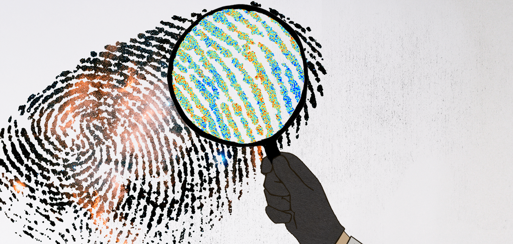

About Me
 Image credit: Sandbox Studio, ChicagoHi there!
I have some exciting news to share--I have just moved to the Brazilian Center for Research in Physics (Portuguese: Centro Brasileiro de Pesquisas Físicas, CBPF) as an Associate Researcher. Prior to this, I was a postdoctoral researcher at Fermi National Accelerator Laboratory (Fermilab) and an Associate Fellow at the Kavli Institute of Cosmological Physics (KICP) at the University of Chicago.
My research focuses on using data from the Cosmic Microwave Background and the Large-Scale Structure to constrain fundamental physics and deepen our understanding of the evolution of the Universe. I’m especially passionate about developing and implementing innovative techniques to maximize the information we can extract from these observations.
I hold a Ph.D. and a Master’s degree in Astronomy from the Observatório Nacional in Brazil. I was raised in the beautiful state of Bahia, Brazil, before relocating to Brasilia, where I obtained my undergraduate degree in Physics from the University of Brasilia. Prior to joining the Cosmic Physics Center at Fermilab, I held a postdoctoral position in the Department of Physics at Florida State University, working with Dr Kevin Huffenberger's group.
Apart from Cosmology, I’m deeply inspired by the beauty of nature, the world, and humanity, and I harbor a passion (though not necessarily expertise!) for various things, including rock climbing and playing Brazilian percussion. I also like incorporating the colors of my home biome, the Cerrado, into my Python plots. You can check out more here !